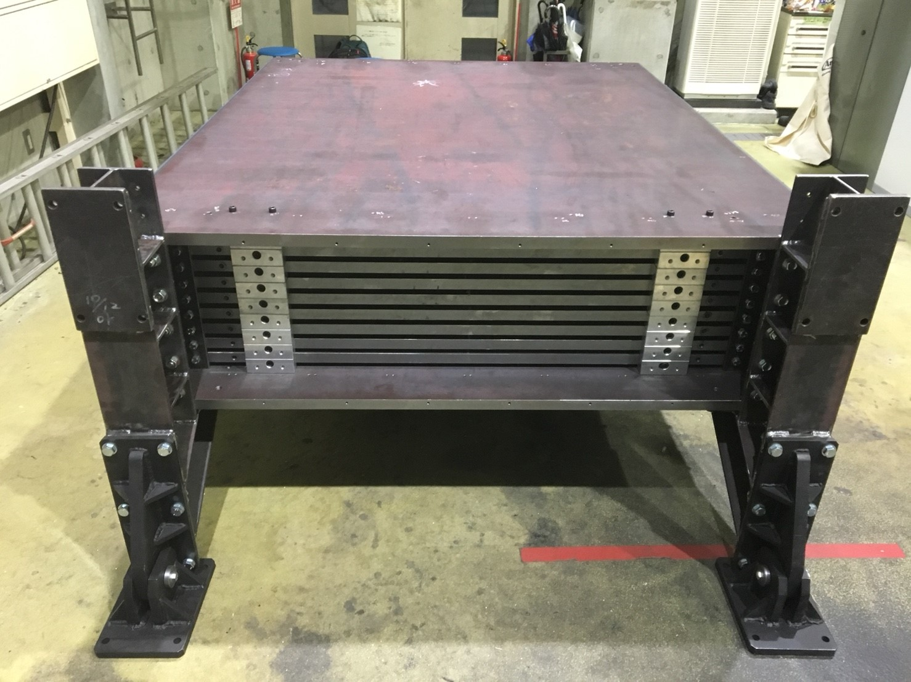

ニュートリノ・素粒子物理学実験 |
アルバム
2017.11.28 J-PARC T59実験のミューオン検出器の構造体の建設が完了しました。
|  |

2017.7.14 J-PARC T59実験のミューオン検出用シンチレーターの性能試験が完了しました。
宇宙線ミューオンがシンチレーターを通過するときに発するシンチレーション光を観測します。
①暗箱。この中にシンチレータを1回のRunにつき4枚を積み重ねて入れて測定しました。シンチレーション光は半導体型光検出器MPPCで検出し、その信号をFlash ADC(CAEN製)で観測しました。
②試験する320枚のシンチレータ。
③データ収集用PC。測定中は2×4=8つのヒストグラムがリアルタイムで表示されます。
④収集システムの一部であるNIMモジュール。宇宙線ミューオンイベントのトリガーは、NaI(Tl)結晶(+光電子増倍管)2個でシンチレーター4枚を上下から挟むことで作りました。
2017.6.23 J-PARC T59実験のミューオン検出器用のプラスチックシンチレーター320枚が、横浜国大に納入されました。
2017.6.10 J-PARC T59実験のWAGASCI検出器の建設が、J-PARC ニュートリノアッセンブリー棟にて完了しました。
2017.6.10 淺田、岡本、松下がJ-PARC 施設見学ツアー 2017 に参加しました。
 物質・生命科学実験施設(MLF)。 |
 ニュートリノ前置検出器。 |
 JーPARC研究棟。こちらで懇談会を行いました。 |
 ハドロン実験施設。新たにラインを建設予定。 |
集合写真は後ほど...